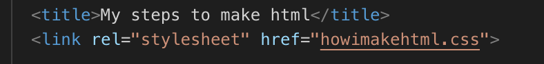

Create a GitHub Account
Maak een account aan op Github.com. Zorg ervoor dat je een goede username kies.
Als je dit al hebt gedaan, ga naar de volgende stap en open GitHub Desktop op je computer.
Maak een account aan op Github.com. Zorg ervoor dat je een goede username kies.
Als je dit al hebt gedaan, ga naar de volgende stap en open GitHub Desktop op je computer.
Maak de doctype en begin en einig met html/p>
In de head komt je titel en je css koppeling
Koppel je bestanden aan elkaar.
In je body komen dingen zoals: